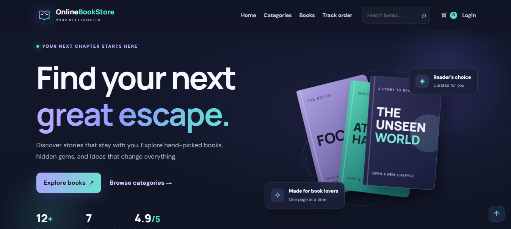
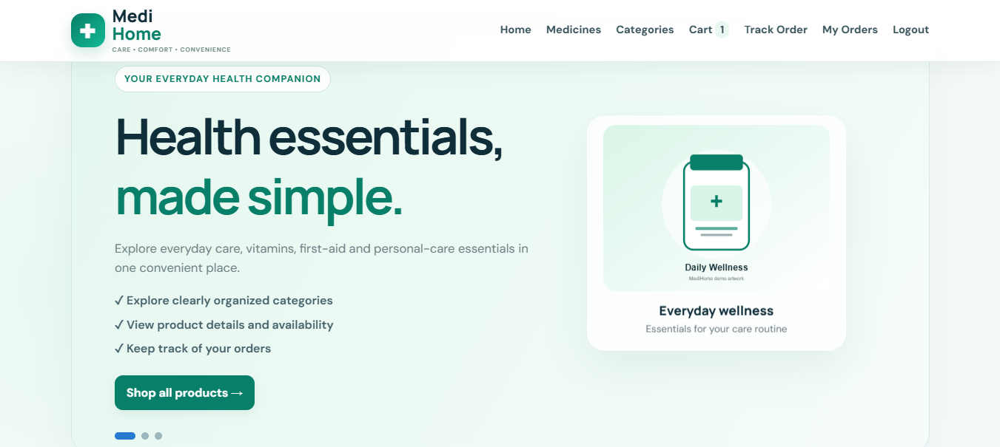

01POSTGRADUATE
MCA
Master of Computer Applications
Dr. Shyama Prasad Mukherjee University, Ranchi
Hi, I'm Adil Anwar, an aspiring QA Automation Engineer with knowledge of Java, Selenium WebDriver, and software testing. I have practical experience through automation projects and skills in test case design, defect identification, and API testing. I also bring 1.4 years of professional experience as a Technical Support Engineer at Movate, with strong troubleshooting and problem-solving skills. I'm eager to contribute to software quality and grow as a QA professional.
I'm an aspiring QA Automation Engineer transitioning into software quality assurance, backed by 1.4 years of professional experience as a Technical Support Engineer at Movate Technologies, supporting SanDisk customers.
I have been developing my skills in Java, Selenium WebDriver, TestNG, Maven, SQL, and API Testing through practical learning and automation projects. My interests include test case design, web application automation, defect identification, and building reliable test automation solutions.
My technical support background has strengthened my troubleshooting and problem-solving skills. I'm eager to apply these abilities in QA Automation and contribute to delivering reliable, high-quality software.
My academic journey in computer applications, from school to postgraduate studies.
Dr. Shyama Prasad Mukherjee University, Ranchi
Ranchi College, Ranchi
Marwari College, Ranchi
St. Xavier’s High School, Mandar
Practical foundations, a troubleshooting mindset, and continuous improvement — one skill at a time.
✳ Skills reflect my current learning and familiarity; I’m continuing to build deeper hands-on experience.
These projects showcase my academic experience in web development, where I built websites using technologies such as HTML, CSS, JavaScript, PHP, and SQL. I’m currently expanding my skills in QA Automation and plan to add testing projects as I continue developing my practical expertise.

PROJECT / 01HOMEPAGE SCREENSHOTA responsive full-stack bookstore application built with procedural PHP, PDO and MySQL. Customers can discover books, manage a session-based cart, create accounts, check out with demo payment options, and track orders. The admin area supports catalogue, stock and order-status management. Runs locally with XAMPP.
A quick look at some of the main pages. These screenshots are representative samples—the application includes additional features such as checkout, order tracking, admin controls, inventory updates and more.

PROJECT / 02HOMEPAGE SCREENSHOTA responsive online pharmacy website built to make medicine and healthcare-product discovery easier. The project focuses on a clean shopping experience, organised product browsing and a structured online-store interface. The source code is available on GitHub.
These screenshots highlight a few key pages of MediHome. They are representative examples; the project includes additional shopping and account features beyond the screens shown here.
Client: SanDisk (Western Digital)
Worked with customers to investigate technical issues, communicate clear solutions and manage support cases — experience that strengthens my troubleshooting, documentation and quality mindset.
Experience duration shown as provided. Add exact joining and exit dates if you want the timeline to display them.
UnderstandClarify the expected behavior and user impact.
InvestigateReproduce, observe, and document what happens.
ValidateCheck evidence carefully and communicate clearly.
I'm looking for an opportunity to begin my career in QA Automation. With a foundation in Java, Selenium WebDriver, and software testing, along with 1.4 years of professional experience in Technical Support, I'm eager to learn, contribute, and grow. If you're hiring for a junior QA role or would like to connect, feel free to send me a message.